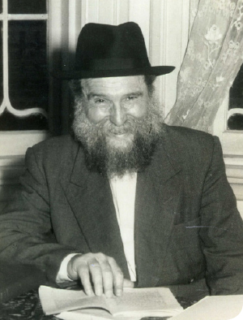

Meetings and Resolutions
From the life of R’ Yehoshua Shneur Zalman Serebryanski a”h
Prepared for publication by Avrohom Rainitz

Following the Rebbe’s letter of 6 Tammuz (that, for some reason, was delayed and arrived in Melbourne a month later, on 6 Av) which said: a meeting should be held of all of Anash who are present in their community and every one of them should participate in the appropriate way and in great measure regarding the yeshiva whether with his body, through his Torah and also his money, or all of them – no one is absolved - R’ Zalman called Anash to an urgent meeting for the next day, 7 Av. The meeting was attended by the nucleus of the Lubavitcher families. After reading the Rebbe’s letter, they discussed ways that would help the yeshiva succeed.
On Friday, 10 Av, R’ Zalman wrote to the Rebbe the resolutions of the initial meeting: 1) strengthening the minyan at the yeshiva, 2) developing the school, 3) developing the after-school classes including the quality of the learning, the t’filla, the instruction and the attendance, 5) arranging for learning at night and on Shabbos for Anash and balabatim in Nigleh and Chassidus, 6) Mesibos Shabbos.
It was concluded that as a first step all the teachers of the yeshiva would farbreng to strengthen the learning and then there would be another meeting of Anash in order to sum up, in a detailed way, the specific role that each person had, for the good of the yeshiva. Then they would have a general meeting in which the broader Chabad community would participate, which would include the Feiglin and Gutnick families. At that meeting, they would read the Rebbe’s letter again and urge the attendees to help the yeshiva, each according to his ability.
In this letter, R’ Zalman reported to the Rebbe about the building of the women’s section in the beis midrash of the yeshiva where the preschool would be during the week. He also reported his plans to open another two classes in the coming school year and he asked for the Rebbe’s bracha that they succeed in finding good teachers.
KEEP UP THE MEETINGS
A week later, on 14 Av, the teachers convened: R’ Abba Pliskin, Aharon Serebryanski, Shmuel Gurewitz, Isser Klugwant and Chaim Serebryanski, and after reading the Rebbe’s letter, R’ Zalman urged the teachers to strengthen the orderliness and discipline of the students and to note whether a student was late or absent. R’ Zalman also asked each teacher to farbreng with his class at least once a month with the understanding that with learning alone it would be impossible to instill the authentic Jewish-Chassidic spirit.
Since the after-school learning ended at 6:20 and the students hurried home, most of them did not stay for Maariv. It was decided that the learning would be shortened by ten minutes and Maariv would take place at 6:10. Of course, this was only good for that period of time which was the Australian winter, when Maariv can be davened at that time.
Two days later, on 16 Av, R’ Zalman convened the nucleus of Chabad in Melbourne once again and after reporting on the meeting with the teachers, it was decided that the time had come for an expanded meeting of all those who belonged to Anash, in the course of which they would all write to the Rebbe, each one delineating what they committed to, for the advancement of the yeshiva.
The next day, R’ Zalman visited R’ Moshe Zalman Feiglin and asked him to arrange with his children a good time for a general meeting. R’ Zalman reported about all this to the Rebbe in a letter dated 17 Av.
In response to this letter, R’ Zalman received a letter from the Rebbe dated 13 Elul 5715: In response to your letters in which you write about the farbrengen of the teachers of Yeshivas Oholei Yosef Yitzchok Lubavitch in Melbourne and the arrangements that were made, surely they will continue with this from time to time in order to check to see whether they followed through on the decisions and what might be added to them, for this is the call of the hour, to ascend in holiness.
A THIRD MEETING
Since R’ Betzalel Wilschansky was not present at the meetings of Anash, R’ Zalman decided to call Anash to a third meeting along with R’ Betzalel. R’ Betzalel was a senior Chabad Chassid in Australia at that time and as someone who had learned in Yeshivas Tomchei T’mimim in Lubavitch, and was completely immersed in avodas ha’t’filla and learning Chassidus, he was a model of a real Tamim and Chassid. His participation was, understandably, very significant.
During the third meeting, R’ Betzalel urged those gathered there to carry out the Rebbe’s instructions and to commit to working on behalf of the yeshiva. Upon his suggestion, each of them wrote what he committed to, and gave R’ Betzalel the note for him to send it to the Rebbe as part of a general letter on behalf of all of Anash in Melbourne, detailing the good work that each had committed to.
Then R’ Zalman invited R’ Moshe Zalman Feiglin to a special meeting with his family. After reading the Rebbe’s letter to them, about the obligation of everyone to participate in helping the yeshiva, he told them that R’ Betzalel was preparing a letter in which all the commitments of Anash would be written. In R’ Zalman’s letter to the Rebbe, he described how nice it was to see how important it was to each member of the Feiglin family to participate on behalf of the yeshiva so that their names too, would be mentioned to the Rebbe in the letter.
The letter gave the Rebbe much nachas as could be seen in the warm letter he sent R’ Zalman dated 28 Elul, replete with brachos.
THE OTHER MEETING
While Anash were arranging meetings on behalf of the yeshiva, another meeting took place in Melbourne by those belonging to Mizrachi in which they spoke strongly against the yeshiva. In his meeting with R’ Moshe Zalman Feiglin, R’ Zalman heard details about what took place at that meeting.
Officially, the Mizrachi meeting was called to discuss bringing a new rabbi and choosing a new chairman after the previous one, R’ Dovid Feiglin, expressed his desire to step down. During the meeting, one of the leaders of the Mizrachi youth movement spoke sharply against the Chabad yeshiva which educated children against Zionism. Their success, he maintained, was because there was no other yeshiva in Melbourne. Therefore, it was necessary to bring a dynamic rabbi who would be able to open a yeshiva in the Mizrachi spirit.
Another speaker got up who, in the past, had already tried to dog the steps of the yeshiva and he also spoke against the yeshiva. Feiglin’s son-in-law, R’ Moshe Kantor, wanted to protest but the organizers of the meeting did not allow him to do so.
Although they all knew that Chabad opposed Zionism and that Chabad Chassidim did not attend Mizrachi events, R’ Zalman always tried to stay away from politics and was careful not to speak against Zionism in the yeshiva so as not to give the opposition reason to be upset.
For this reason, R’ Zalman was very sorry to hear about this incitement against the yeshiva and about the attempt to link the issue of Torah learning with political views. Many of the Mizrachi children attended the yeshiva and talk like this could turn them off.
He reported to the Rebbe about this and noted painfully that although the Mizrachi people “know good and well to what extent the few Lubavitchers here are downtrodden and are struggling and making efforts to develop proper chinuch, they still were happy to hear these sharp words against the yeshiva.”
DO NOT RESPOND
After information about the meeting became known to Anash, some said they should debate this with Mizrachi, while others said it would be better not to discuss it at all and the only response should be to strengthen their work in developing the yeshiva and those who said what they did, or did not protest, would come to regret it on their own.
During the Mizrachi meeting, R’ Mordechai Rich was chosen as the chairman. Although he was considered a close friend of the yeshiva, and was even a member of the yeshiva’s board, in the Mizrachi meeting he was heard supporting the position of those opposed to Chabad. However, later in the week, when he met with R’ Zalman, he promised that he would always be one of the best friends of Chabad and would do everything for the good of the yeshiva.
R’ Zalman reported all this to the Rebbe and noted that “on the one hand, they are Zionists and they seek to bring their philosophy into the yeshiva. A number of times, I heard hints of this from our friends that belong to their ranks. Of course, there are also among them those who look negatively upon us because we keep our distance, but on the other hand, there are good people among them like R’ Mordechai, and especially the Feiglin family who are of Anash and who are definitely happy about the development of the yeshiva. Still, the bottom line is that even those who are considered our friends are thinking divisive thoughts, and may Hashem help us.”
In the letter mentioned above, from 13 Elul, the Rebbe referred to the conflict with members of Mizrachi and paved the way for the proper way of dealing with similar circumstances when he said not to respond and consequently, what was said would be forgotten. That would make it easier to prevent undesirable actions, and in this particular case, since they already expressed their protest, that was certain enough.
LUBAVITCHERS ARE SUCCESSFUL EVERYWHERE
Along with reporting the attacks at the Mizrachi meeting, R’ Zalman was happy to report to the Rebbe about what one of the leaders of Mizrachi had to say in favor of Chabad’s activities:
One of the members of Mizrachi, who corresponded with R’ Yehuda Leib Avida (Zlotnik), a well-known scholar and Zionist leader, wrote to him about the Chabad yeshiva in Melbourne. In his response, R’ Avida wrote, “I was happy to hear of the success of the Lubavitch yeshiva” and he added that Lubavitcher Chassidim “are successful everywhere because their deeds are for the sake of heaven and the merit of their ancestors assists them.”
The one who received this letter showed it to his friends, the Mizrachi leaders, and R’ Mordechai Rich told R’ Zalman that he planned on reading the letter at the next Mizrachi meeting.
In R’ Zalman’s letter of 10 Av, he also reported to the Rebbe about the visit of R’ Gedalia Hertz in Melbourne as he was on his way to Sydney where he was appointed rav of a shul. R’ Hertz was a Gerrer Chassid who had learned for several years in Yeshivas Tomchei T’mimim in Warsaw, and Chabad Chassidim in Melbourne were happy at the opportunity to sit with a Tamim like him and hear his memories about the mashpiim and roshei yeshiva in Tomchei T’mimim. His sermons were based on Tanya and the Chassidic maamarim that he learned, and his visit made a good impression on the city.
Beis Moshiach (staff). "Meetings and Resolutions." Beis Moshiach, no. 926 (May 13, 2014).